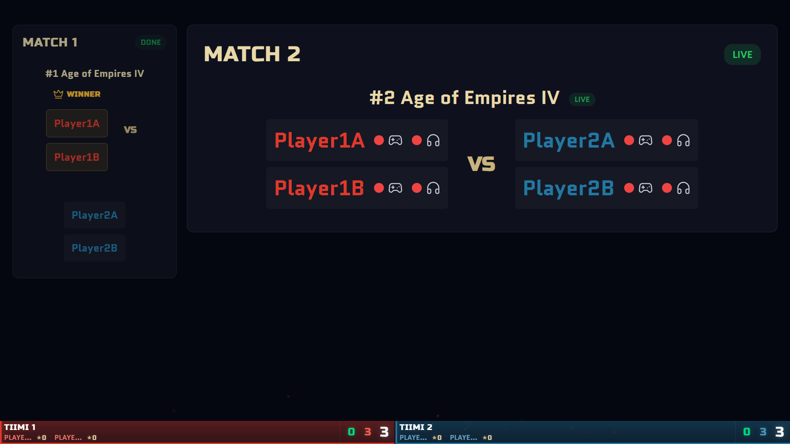
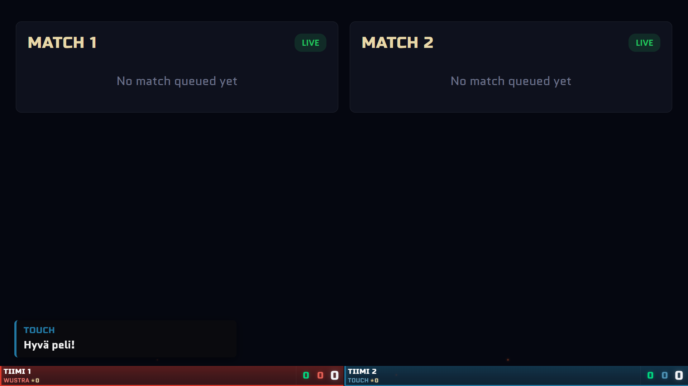

full/ hardening — live progress
Builder/critic swarm closing known gaps in full/ (TODO.md + EVENT_BUG_REPORTS.md) before general polish. Updated as rounds complete.
11 rounds, 68 local commits, backlog exhausted of autonomous-safe work
Session status
Every EVENT_BUG_REPORTS.md item is either fixed or a standing exception (needs your call, or can't be repro'd without the reporter). TODO.md's remaining open items are all either standing exceptions, need a human at real hardware/a real event, or are genuinely low-priority speculative notes with no concrete repro. Nothing autonomous-safe is left undone — see the round-by-round detail below, and the chat for a full written summary.
Round 1 — logic pieces (test-gradable) — done
fixed, merged to main
P1 — Discord challenge-slot channel wiring
Challenge matches never had a slotChannels['challenge'] entry, so every Discord move silently failed. Two competing fixes built in isolated worktrees; critic blind-picked the winner (near-identical fixes, winner reused the shared test fixture instead of duplicating it). Merged, 15/15 tests pass. Existing tournaments without a challenge key degrade gracefully (no throw).
discord-panel.js setup UI + saveSetup() · commit 7b45268 · not yet verified on a live screen
fixed, merged to main
P2 — team.html match-list team-scoping
"Current Match", "Upcoming Matches" and "Recent Events" showed every team's matches, not just the viewer's. Winner reused the existing _matchInvolvesUs() helper and added a stricter analogous helper for history events. Known edge case: a gameHistory entry with no player IDs at all falls back to "show unscoped" (same permissive default the existing helper already used) — flagged for a live spot-check, not a regression.
team-controls.js renderCurrentMatch() / renderUpcomingMatches() / renderRecentEvents() · commit e412621 · not yet verified on a live screen
already fixed (no action needed)
P3 — Role-label mismatch
Both independent builders investigated and found this was already resolved by an earlier commit (7831e1b) — navbar.js and profile.html both already derive the label from isPlayer === true, set at team-assignment time. No code change made.
no issues found
Round 1 cross-surface review
Independent reviewer checked both merged fixes together: no shared code paths, no interaction, both match existing file conventions, both degrade gracefully for pre-existing tournament data.
Round 2 — visual/UX pieces — done
fixed, merged to main
P4 — Admin click-to-pick contested hex
The challenge-hex picker was a raw-coordinate dropdown ("Side Heart (q2r-4) — Tiimi 2"). Winner adds a "Pick on Board" mode: hides the challenge modal, highlights eligible heart hexes on the live board, click writes into the same #challengeHexSelect field the dropdown already used (kept as fallback). Winner correctly reapplies highlight classes after every board re-render — needed because a live Firestore update rebuilds all hex DOM elements from scratch, which would otherwise silently drop the highlight mid-pick during a live event.
admin.js / admin.html / admin.css · commit dc41865 · needs real Firestore auth to screenshot — not yet verified on a live screen
already implemented (no action needed)
P5 — view.html spell-window banner
Both independent builders found this already fully built on main (phase-manager.js's spell_window_1..4, display-manager.js's _renderSpellWindowSlide(), same full-screen-takeover mechanism as BREAK). Confirmed with a real screenshot below via the dev-preview harness at 1920×1080.

Real, credential-free screenshot via dev/view-preview.html's "Spell Window (mid-queue, mixed log)" scenario. Note: content is top-anchored with a large empty lower two-thirds at 1920×1080 — worth a look for a future polish pass, not a functional gap.
fixed, merged to main
P6 — Referral code bulk-generate
Bulk-generate modal: paste N player names (or leave blank for N unlabeled codes), get back one labeled code per name, copied together. Winner correctly pre-labels via the existing assignedName field; the losing candidate had used assignedTo, which is UID-typed and checked by firestore.rules against request.auth.uid — would have been a real schema-semantics bug. Also added "Copy All Unused URLs."
home.html · commit 5e20c99 · needs real Firestore auth to screenshot — not yet verified on a live screen
no blocking issues, 1 new item flagged
Round 2 cross-surface review
Independent reviewer confirmed both merged features are correct in isolation and don't interact (disjoint files/collections). Verified the P4 highlight-reapplication claim by tracing renderBoard()'s call path from Firestore's onSnapshot down. Verified P6 never touches the UID-typed assignedTo field.
Surfaced an unrelated pre-existing bug while checking: login.html's registration write sets 5 fields on a referralCodes doc, but firestore.rules restricts the diff to just 2 (used, assignedTo) — if the real (non-temp) ruleset is deployed, marking a code used at registration may fail. Logged to TODO.md; not fixed this round (needs the user's call on which ruleset is actually live, an open question that predates this pass).
Round 3 — large/cross-cutting
built, not live (rules deploy skipped indefinitely — user's call)
P7 — Season-wide statistics page
New full/season-stats.html aggregates team standings across every tournament linked to a season. Since teams have no persistent id across tournaments, matching is by team name — winner explicitly guards against merging two different teams that share a name within the same tournament (kept as separate rows + a warning banner); the losing candidate silently summed them, a real correctness bug the critic caught by reading both aggregation implementations directly.
Not usable live: the seasons/{id} Firestore collection has no rule block at all — default-deny. Fix is documented (exact rule block) in docs/architecture/firestore-rules.md §4b if this is ever picked back up, but the user has decided to skip the rules deploy indefinitely.
season-stats.html / season-stats.js / team-standings.js · commit 357e721 · rules fix commit 8f899f0 (docs only)
Round 9 — season stats v2 (user request) — done
built, not live (same rules gap as P7 above)
Player-level analytics, tournament filter, best teammates
Expanded season-stats.html: player-level stats keyed by stable Firebase uid (not name or team — neither persists across tournaments), live tournament-filter checkboxes that recompute every card on the page (team standings, player leaderboard, synergy, insights — not just some of them), "Best Teammates" pairing, and 4 more insight cards (Season MVP, Most Active, Best Win Streak spanning tournament boundaries, Most Improved) — all built only from fields that actually exist in the data, no fabricated metrics.
Winner correctly handles a real edge case the losing candidate missed: a single match can have 3+ teams (multi-team matches exist in the schema), so "on the losing side" isn't the same as "on the losing team" — the winner re-groups by registry team, the loser's synergy logic could have credited two players from different losing teams as "teammates." Two more gaps (unlinked-player count computed but never shown to the user; a duplicated magic-number floor) fixed directly after merge.
commits f27cb17, 5f355ae · needs real Firestore auth + linked season data to visually verify — not yet verified live, same as P7
Round 10 — Discord bot personality (user request) — done
merged, harsh-critic clean, 95/95 tests
Urho, the mountain's chronicle-keeper
The Discord status-message feature (round 7) now has a persistent character: Urho, a dry/weary rune-spirit bound to the mountain since Gasmorah's sealing, grounded in the game's actual lore (LORE.md). 50 hand-written message variations across 4 outcome shapes (16 success / 14 partial / 12 failure / 8 no-op) — every single template, not a sample, is test-verified to still convey the real facts (destination channel names, moved/total counts, failure reasons). Weighted-random selection with anti-repeat so the same line can't fire twice in a row for the same outcome shape.
Winner kept English as the primary language with sprinkled Finnish loanwords (kulkija, Kronikat) — consistent with the rest of the app's English operational UI; the losing candidate rewrote the entire channel into full Finnish, a much bigger unrequested change to a live-event tool a TD reads mid-match. One concrete gap fixed after merge: the persona text had dropped the original's ✅/❌/⚠️ at-a-glance severity emoji — restored as a fixed prefix independent of which of the 50 lines gets picked.
commits 7779e49, 6615499 · functions/ test suite 95/95
Round 11 — investigations — done
2 real bugs found, fixed, independently re-verified; 1 clean investigation
Undo Last Action, phase-init dependency, logEvent/logAction audit
Undo Last Action bug — confirmed real, fixed. Hex-territory point awards were never logged via logAction(), making them invisible to "Undo Last Action." The undo scan correctly skipped the deliberately-non-undoable phase-advance entries and landed on a match result from 2 phases back — exactly the reported symptom. Fixed by logging the award properly, plus a new warning in the undo confirm modal when it's genuinely reaching past newer non-undoable actions. A harsh independent critique then found a deeper related gap: undoing a points award never removed the matching pointsHistory entry, leaving the "don't double-award" guard stuck and the post-tournament summary/replay disagreeing with the restored points. Fixed across all 3 places that award points.
Tournament-flow phase-init dependency — investigated, no bug found. Traced every currentPhase read across 14 files. Match creation and player linking have zero coupling to it; every other read is optional-chained or sits behind an explicit guard. Code already matches the intended independence — nothing to fix.
logEvent vs logAction audit — 4 real coverage gaps found and fixed in admin.js (completing a break, clearing the match queue, waiving a pending hex win, and the legacy round-advance path were all only reaching the public event log, invisible to the structured audit trail). A harsh critique caught that one of the two new previousState snapshots used the wrong shape (an array where the working convention expects an object map, plus a wrong field name) — currently harmless since that action type isn't wired to undo yet, but would have silently corrupted data the moment it was. Fixed to match the proven-working convention before it could become a live landmine.
commits c98c364, c928a80, 8e2a1d3 · full suite 254/254
1 gap found and fixed, merged
Discord lobby-info for self-service challenge matches
A queued self-service CHALLENGE match on team.html never showed the Discord-channel/lobby-info panel that normal matches get. Two root causes: the "Your Next Match" panel's visibility gate excluded challenges entirely (they don't use the Match-1/Match-2 slot sub-phases), and self-service challenge queue entries never even got a slot: 'challenge' tag set on them at all — only TD-created challenges did. Fixed both. Given self-service challenges are expected to become more common than TD-mediated ones, this closes a real gap.
Harsh critique caught a real regression risk before merge: the new lookup was missing the same _belongsToCurrentRound() guard that exists on two sibling lookups in the same file — added there specifically after a 2026-08-03 live event where a never-completed entry kept matching "my active match" forever across rounds. Without it, a stuck/abandoned challenge from a prior round would have popped the panel indefinitely. Fixed and deduplicated against the file's existing helper.
commits a9b7ae6, 548e527 · full suite 254/254
Round 4 — mobile/iPad admin touch support
User decision: tap-to-select as the primary interaction, drag-and-drop kept working as a backup — multiple ways to do the same thing, intuitive and responsive. Two waves: establish the pattern on one site, then apply it to the rest.
fixed, merged to main, harsh-critic clean
P8 — Dual-mode interaction pattern + seating order
Built setupTapToSelect() in admin.js — event-delegated, takes an external AbortController signal (plugs into the existing per-render cleanup lifecycle), an isValidTarget guard for asymmetric source/target validity. Applied to the seating-order modal: tap a seat to arm it, tap another to swap (via the same swapSeatingPositions() the native drag-and-drop already uses). Native HTML5 drag-and-drop is untouched and still fully works — both paths coexist. Also scoped a new iPad-landscape (901-1194px) CSS breakpoint.
First-pass critic (pre-harsh-critic-policy) flagged 2 real gaps: armed state didn't cancel on an outside-container click (e.g. modal close button), and the new media query lacked a min-width, relying on cascade order. Both fixed in a dedicated fix round; a genuinely adversarial critic traced the actual DOM/event order (container's own handler fires and clears state before the new outside-click listener could ever see a valid tap) and reported clean — zero remaining gaps.
admin.js / admin.css / admin.html · commits 39af6c1, 9b84f12 · needs real Firestore auth + a touch device to visually verify — not yet verified on a live screen
fixed, merged to main, harsh-critic clean
P9 — Apply pattern to remaining 3 DnD sites
Team/player↔side assignment and match-queue reordering — using P8's proven setupTapToSelect() pattern. "Team/player assignment" and "match-side drop zones" turned out to be one interaction site, not two — a piece-decomposition mistake caught during merge (both competing implementations independently touched the same functions). Ported the one real fix the redundant candidate found (a tap-to-select/click-bubbling bug on the remove-player button) rather than merging duplicate work.
Went through 2 fix rounds: round 1 fixed 6/7 flagged gaps (reverse tap-order support, exact CSS parity with the seating precedent, discoverability hints, queue code dedup) but introduced a toast that fired on ordinary "changed my mind" re-arms, not just genuine mistakes — caught by the harsh critic. Fixed directly and independently re-verified. A final cross-surface pass across all 4 sites then found 3 of 5 tappable element types were still missing in-UI discoverability hints — fixed; all 5 now have one, all .tap-armed CSS is byte-identical across sites, and every tap path calls the same function the native drag-and-drop path uses.
admin.js / admin.css · commits ac8a94d, 13099bb, 62da8ef, 85442e8, 6e5ee33, d2abf5d · scope: admin.html only — god.html has its own separate untouched drag-and-drop (team-manager.js, match-queue-manager.js) · needs a real touch device to visually verify
Round 4 complete
Round 5 — video export — done
fixed, merged to main, harsh-critic clean
P10 — Export tournament replay as video
New "Export Video" button on replay.html: rewinds to the start, prompts the browser's screen/tab-share picker (getDisplayMedia()), records via MediaRecorder while driving the replay at 5x speed, and downloads a .webm on completion — zero new dependencies. Went through 2 real critique rounds: round 1 caught a disqualifying bug in the losing candidate (a full-screen progress overlay that would have recorded a black screen instead of the actual replay board — exactly what adversarial review exists to catch), and a follow-up fix round caught its own regression (a stale status-bar timer from one export could hide a subsequent export's live progress) that a broken/placeholder critic result initially missed — re-verified independently before merging.
Correctly distinguishes playback-just-started from playback-actually-finished (polls for isPlaying's true→false transition, not the synchronous true right after calling play()), handles the user cancelling the picker or stopping screen-share mid-capture from the browser's own UI, restores the admin's original scrub position and speed on every exit path, and cleans up on page unload.
replay.html · commits b971325, 1aaab2d, cf82c13 · needs a real screen-share to visually verify — not yet verified live. Note: getDisplayMedia() requires a secure context (https or localhost) and has poor-to-no mobile browser support — this is a desktop admin feature.
Round 6 — TODO.md backlog sweep, part 1 — done
6/6 fixed, merged, harsh-critic clean
Small independent fixes
Firestore deprecation warning (root-caused as a silently-broken prior "fix" — the compat SDK build this app loads doesn't have the modern cache APIs at all, verified by downloading and grepping the real bundle; multi-tab persistence was never actually active). "Use here" vs "+Assign" button clarity (plus a caught-and-fixed unsafe-tooltip regression). Duplicate display name disambiguation. config/defaultRooms silent-overwrite fix (a 4th write site the losing candidate missed was the deciding factor; attribution now uses authenticated identity, not free text). Undo now retracts the pendingHexWins reminder it queued. 3 small defense-in-depth guards.
commits cbc6f89, ac7367b, bd3bc4e, b2efdbb, 7411512, daa5abf, 4844a18
Round 7 — bigger features — done
6/6 resolved, merged, harsh-critic clean
Bigger features
Phase-manager slot cards now show choose-winner buttons directly once votes are in, leading side highlighted. Discord channel-name bug on team.html was already fixed on main (confirmed by 2 independent investigations, no action needed). Discord bot now posts a status message after each move-command batch, naming the real destination channel(s) — full test suite 88/88 passing. Manual spell-cast logging added, independent of spell-window phase gating. Heart-hex challenge eligibility is now genuinely adjacency-triggered per the game's actual rules (was previously "any opponent heart hex, always" — that behavior now correctly belongs only to its one exception spell). team.html's "Your Next Match" panel is now above Teammates with a real conditional highlight for pending actions.
One builder's agent run failed mid-task (spell logging) — rather than discard its real commit unreviewed, ran a dedicated harsh comparison against the actual diff and confirmed it had extended the wrong mechanism (never wrote the required spell_cast type). The other candidate's commit was merged instead.
commits 809d43f, 6a117c5, 0caab1e, ab37eeb, 1f28fb7, f944cd8, 9a2546a (docs)
Round 8 — live-screen readability + chat overlay — done
2/2 built from fully-specified plans, harsh-critic clean
Bigger names, focus mode, and live chat on the spectator screen
Player names on the live match screen: 24px → 38px (52px in focus mode). A lone active match slot now expands to fill the screen while the finished one shrinks to a dimmed winner column, instead of always sitting in a fixed 50/50 split. Tournament chat messages now pop up as transient toasts bottom-left, tagged with the sender's name in their team color, fading after ~9s.


Both re-verified independently: I regenerated the Puppeteer e2e screenshots myself after merging (the builder's originals were lost when its isolated worktree was cleaned up) and re-ran the full test suite. Found and fixed one genuinely pre-existing (not caused by this round) stale test that predated the Discord channel-name fix from round 7 — full suite is 254/254 now.
commits 746763b, ec45e78, 812ad75 (live-screen) · 577b8dd, 908c580, 99e7832 (chat overlay) · 01812b8 (stale test fix) · still needs real-hardware judgment on the actual LAN screen before the next event
needs your input before an autonomous build
Challenge concurrency (2-slot model) + multi-hex bundling
Concurrency and the bipartite-split resolution mechanic are decided (see TODO.md 2026-08-09 entries), but the odd-cycle validation policy and the "challenge filler game" scope are explicitly not fully thought out yet per your own notes — implementing this now would mean a swarm guessing at open game-design questions in a live-tournament system. Recommend scoping this one with you directly before building.